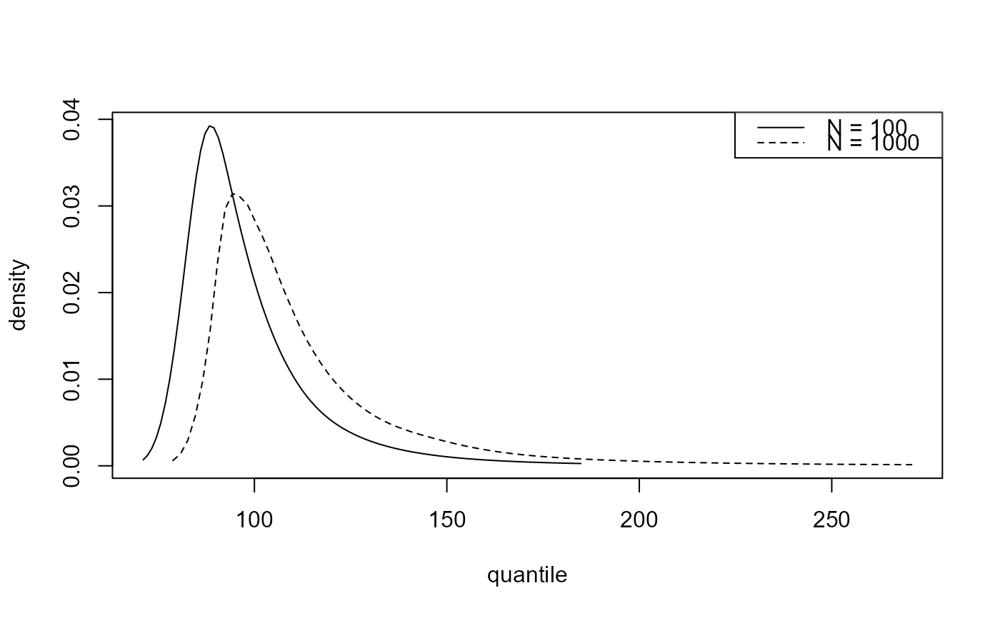
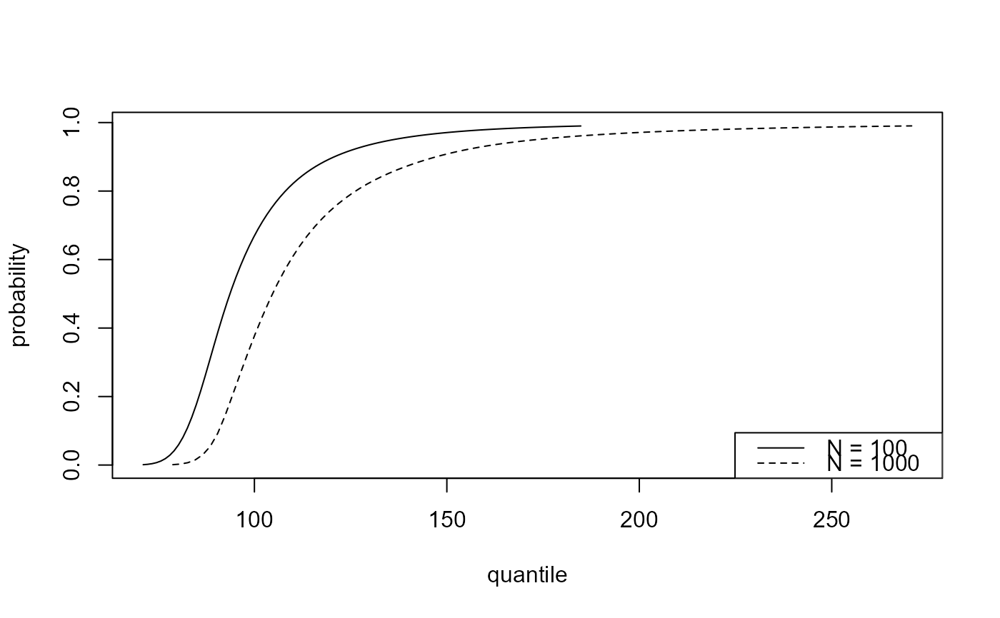
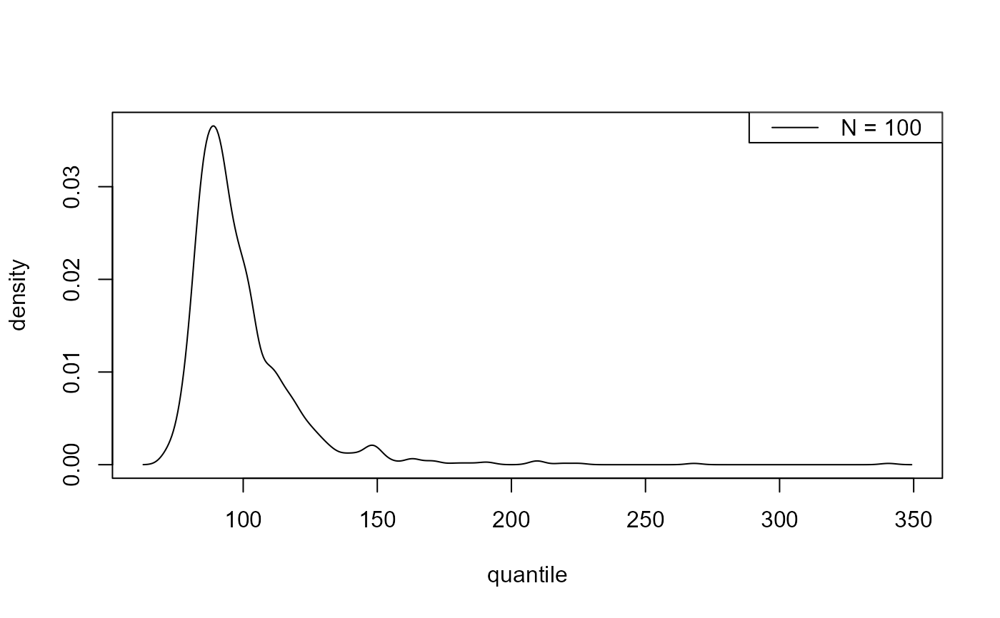

Predictive inference for the largest value observed in \(N\) years.
Source:R/blitePredictive.R
predict.blite.Rdpredict method for class "blite". Performs predictive inference
about the largest value to be observed over a future time period of
\(N\) years. Predictive inferences accounts for uncertainty in model
parameters and for uncertainty owing to the variability of future
observations.
Arguments
- object
An object of class
"blite"returned fromblite.- type
A character vector. Indicates which type of inference is required:
"i" for predictive intervals,
"p" for the predictive distribution function,
"d" for the predictive density function,
"q" for the predictive quantile function,
"r" for random generation from the predictive distribution.
- x
A numeric vector or a matrix with
n_yearscolumns. The meaning ofxdepends ontype.type = "p"ortype = "d":xcontains quantiles at which to evaluate the distribution or density function. No element ofxcan be less than the thresholdattr(object, "inputs")$u.If
xis not supplied thenn_year-specific defaults are set: vectors of lengthx_numfrom the 0.1% quantile to the 99% quantile, subject all values being greater than the threshold.type = "q":xcontains probabilities in (0,1) at which to evaluate the quantile function. Any values outside (0, 1) will be removed without warning. No element ofpcan correspond to a predictive quantile that is below the threshold,attr(object, "inputs")$u. That is, no element ofpcan be less than the value ofpredict.evpost(object,type = "q", x = attr(object, "inputs")$u).If
xis not supplied then a default value ofc(0.025, 0.25, 0.5, 0.75, 0.975)is used.type = "i"ortype = "r":xis not relevant.
- x_num
A numeric scalar. If
type = "p"ortype = "d"andxis not supplied thenx_numgives the number of values inxfor each value inn_years.- n_years
A numeric vector. Values of \(N\).
- ny
A numeric scalar. The (mean) number of observations per year. Setting this appropriately is important. See Details.
- level
A numeric vector of values in (0, 100). Only relevant when
type = "i". Levels of predictive intervals for the largest value observed in \(N\) years, i.e. level% predictive intervals are returned.- hpd
A logical scalar. Only relevant when
type = "i".If
hpd = FALSEthen the interval is equi-tailed, with its limits produced bypredict.evpost(object, type ="q", x = p), wherep = c((1-level/100)/2,(1+level/100)/2).If
hpd = TRUEthen, in addition to the equi-tailed interval, the shortest possible level% interval is calculated. If the predictive distribution is unimodal then this is a highest predictive density (HPD) interval.- lower_tail
A logical scalar. Only relevant when
type = "p"ortype = "q". If TRUE (default), (output or input) probabilities are \(P[X \leq x]\), otherwise, \(P[X > x]\).- log
A logical scalar. Only relevant when
type = "d". If TRUE the log-density is returned.- big_q
A numeric scalar. Only relevant when
type = "q". An initial upper bound for the desired quantiles to be passed touniroot(its argumentupper) in the search for the predictive quantiles. If this is not sufficiently large then it is increased until it does provide an upper bound.- ...
Additional optional arguments. At present no optional arguments are used.
Value
An object of class "evpred", a list containing a subset of the following components:
- type
The argument
typesupplied topredict.blite. Which of the following components are present dependstype.- x
A matrix containing the argument
xsupplied topredict.blite, or set withinpredict.bliteifxwas not supplied, replicated to haven_yearscolumns if necessary. Only present iftypeis"p", "d"or"q".- y
The content of
ydepends ontype:type = "p", "d", "q": A matrix with the same dimensions asx. Contains distribution function values (type = "p"), predictive density (type = "d") or quantiles (type = "q").type = "r": A numeric matrix withlength(n_years)columns and number of rows equal to the size of the posterior sample.type = "i":yis not present.
- long
A
length(n_years)*length(level)by 4 numeric matrix containing the equi-tailed limits with columns: lower limit, upper limit, n_years, level. Only present iftype = "i". If an interval extends below the threshold thenNAis returned.- short
A matrix with the same structure as
longcontaining the HPD limits. Only present iftype = "i". Columns 1 and 2 containNAs ifhpd = FALSEor if the corresponding equi-tailed interval extends below the threshold.
The arguments n_years, level, hpd, lower_tail, log supplied
to predict.blite are also included, as is the value of ny
and model = "bingp".
Details
The function predict.evpost in the
revdbayes package is used to perform the
predictive inferences. The effect of adjusting for the values of the
extremal index \(\theta\) in the posterior sample in
object$sim_vals[, "theta"] is to change the effective time horizon
from \(N\) to \(\theta N\).
ny provides information about the (intended) frequency of
sampling in time, that is, the number of observations that would be
observed in a year if there are no missing values. If the number of
observations may vary between years then ny should be set equal to
the mean number of observations per year.
Supplying ny.
The value of ny may have been set in the call to
blite. If ny is supplied by the user in the call to
predict.blite then this will be used in preference to the value
stored in the fitted model object. If these two values differ then no
warning will be given.
Examples
### Cheeseboro wind gusts
cdata <- exdex::cheeseboro
# Each column of the matrix cdata corresponds to data from a different year
# blite() sets cluster automatically to correspond to column (year)
cpost <- blite(cdata, u = 45, k = 3, ny = 31 * 24)
# Interval estimation
predict(cpost)$long
#> lower upper n_years level
#> [1,] 77.63947 154.3975 100 95
predict(cpost, hpd = TRUE)$short
#> lower upper n_years level
#> [1,] 73.20082 137.7974 100 95
# Density function
plot(predict(cpost, type = "d", n_years = c(100, 1000)))

# Distribution function
plot(predict(cpost, type = "p", n_years = c(100, 1000)))

# Quantiles
predict(cpost, type = "q", n_years = c(100, 1000))$y
#> [,1] [,2]
#> [1,] 77.63947 86.15225
#> [2,] 86.94101 95.92270
#> [3,] 93.64742 104.88446
#> [4,] 104.39991 120.71083
#> [5,] 154.39753 209.17449
# Random generation
plot(predict(cpost, type = "r"))
